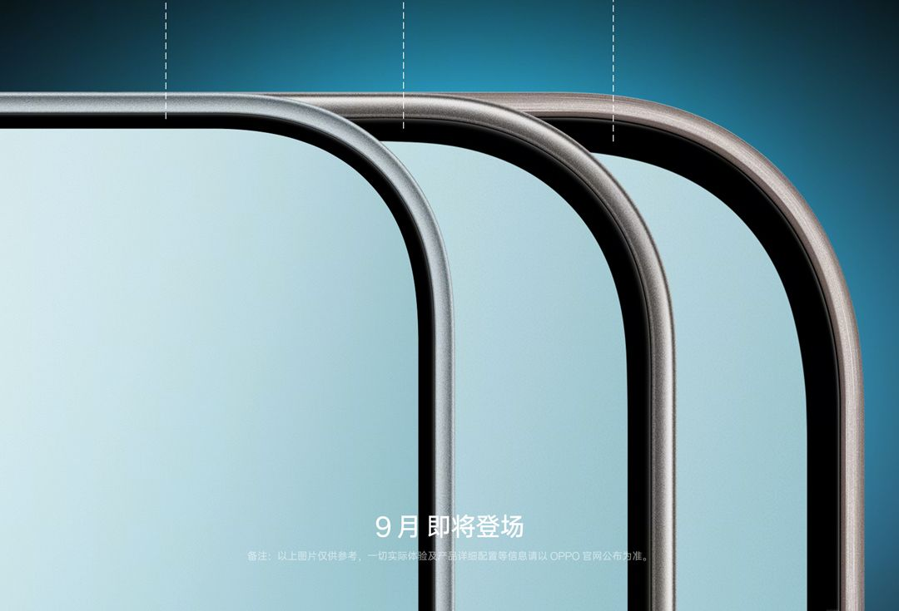

THE TECH EDIT
기술의 변화, 매일 한눈에.
카메라 · 스마트폰 · AI, 해외 테크 소식을 모아 전합니다.
최근 발행2026-09-11
새로 들어온 소식
LATEST STORIES최신 뉴스
전체 2,873개 기사테슬라 사이버트럭 측면 카메라 업그레이드: 수동 공기역학을 통한 빗물 자가 세척
Sony, 4세대 DWX 무선 마이크 출시: 간편한 조작과 안정적인 전송이 특징, 송신기 자체 녹음 백업 기능 제공
Sony FE 400mm F4.5 GM OSS 렌즈 스파이샷 최초 공개, 2주 내 출시 예정
업계 최초, SmartSense SerDes 및 온칩 ISP 통합 차량용 CMOS 이미지 센서 출시
Apple iPhone 듀오 출시 후 Samsung의 맹렬한 조롱: "이게 심즈 속편인가요? 데워진 밥은 왜 저에게 알리지 않았죠? 듀오링고 빨리 와!"
레드매직(RedMagic) 장차오, iPhone Duo의 풀스크린 경쟁 합류 언급, 레드매직(RedMagic) 12 신제품에 최신 9세대 언더스크린 기술 탑재 예고

픽셀 11 프로 vs 아이폰 17 프로: 1,100달러 플래그십 스마트폰 중 승자는?
OPPO, Huawei, Canon, Sony, 세계 최대 이미지 특허 라이선스 프로젝트에 공동 참여

오포 Find X10 카메라, 배터리, 디스플레이 디자인 세부 정보 공식 확인
Nubia 사장 니페이, iPhone Duo에 대해 언급: Apple은 2세대 디스플레이 아래 기술에 머물러 있을 가능성이 높지만, 우리는 이미 7세대까지 개발했습니다.
Nubia 장레이: Apple의 언더 디스플레이 카메라 개발은 좋은 일이며, 7년 전 우리가 고수했던 방향이 옳았음을 증명한다
모토로라, 새로운 폴더블 디스플레이 스마트폰 예고
감자튀김이 드디어 '비행'에 성공, 맥도날드와 메이퇀의 첫 드론 전용 배송 노선 개통
뤄융하오, Apple 최초의 폴더블 디스플레이 스마트폰 iPhone Duo 맹비난: "스크린 아래 카메라, 와이드 스크린 비율, 내외부 스크린의 끊김 없는 연결 등 모두 베낀 것"
Lingyi iTech, Apple 최초 폴더블 디스플레이 스마트폰 iPhone Duo 공급망 진입 소식
저우제룬, vivo 이미지 앰배서더 발탁: X500 Pro Max 스마트폰 언박싱, '맑은 날' 컬러도 공개
Apple iPhone 18 Pro/Max 전 세계 가격 비교: 미국이 가장 저렴하고 튀르키예가 가장 비싸며, 홍콩 버전은 중국 버전의 약 90%
Apple의 가장 무거운 Pro Max 모델: iPhone 18 Pro Max, 249g으로 전작보다 18g 증가
iPhone 18 Pro 충전 속도 대폭 향상, Apple 40W 다이내믹 전원 어댑터 사용 필요

iOS 27, 다음 주부터 지원되는 다양한 아이폰 기종에 출시
세계 최고 인상률: 인도 시장 구형 Apple iPhone 가격 최대 41% 인상
검색 결과가 없습니다
다른 검색어를 입력하거나 필터를 초기화해 보세요.